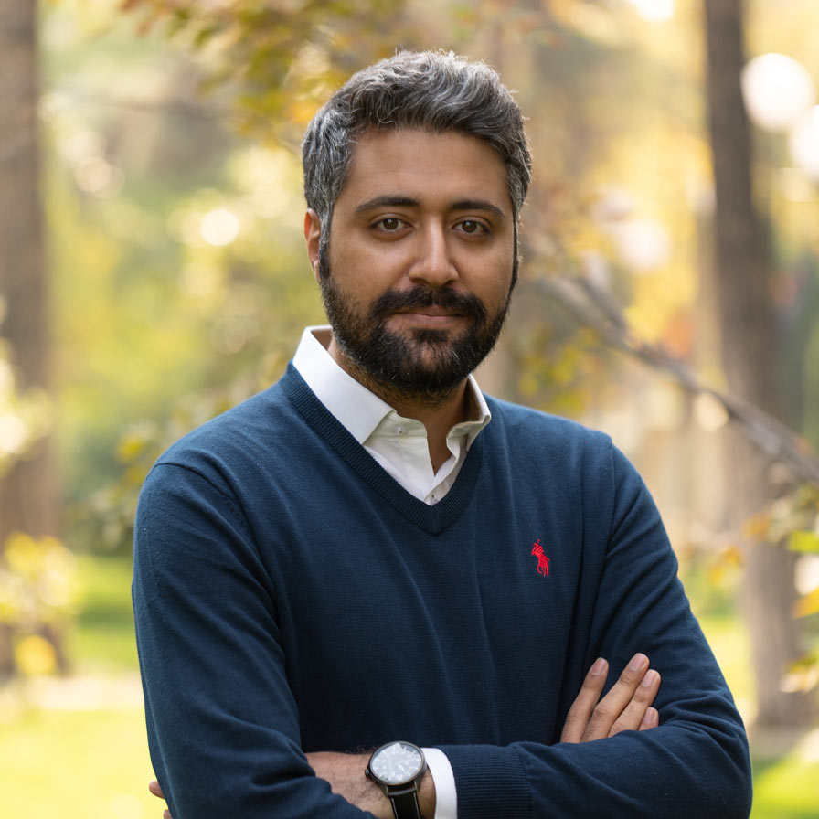

Amirhossein Shirzad
About Me
I am currently a first year PhD student at National University of Ireland, Galway (NUI Galway), advised by Colm O'Riordan at Computational Intelligence Research Group.
I am funded by Data Science Institute (DSI) and my research interests are reinforcement learning and
multiagent systems.
Education
National University of Ireland Galway, Galway, Ireland
Ph.D. Student • Artificial intelligence • Oct. 2020 - Current
University of Tehran, Tehran, Iran
Master of Science • Information Technology – Multimedia Systems • 2016 - 2020
Bachelor of Science • Computer Science • 2008 - 2013
Research
|
Deep Learning approach for text, image, and GIF
multimodal sentiment analysis
ICCKE 2020 / Paper / Video
|
Work Experience
Center for IT and Cyberspace, University of Tehran, Tehran, Iran
Software developer • 2017 - 2020
Raadwin Creative Studio, Tehran, Iran
Mobile application developer • 2014 - 2017
Honors And Awards
- 2017 • Awarded top student project for UT App, 2nd Annual meeting for introducing latest IT achievements, University of Tehran
- 2016 • 1st Place in 3rd Fanavard Nationwide Competition in Open-source intelligence (OSINT), Sharif University of Technology, Tehran.